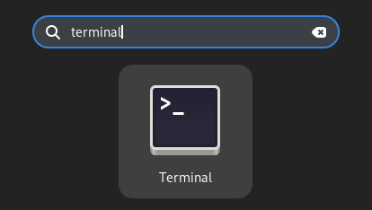

2. Getting Started - The Command Line
Different operating systems will have different default applications for accessing the command line. These applications might be referred to using terms like “terminal”, “shell”, or “command line interpreter”. They allow you to interact with a computer using an interface where you type in strings of text in order to execute commands. Different command line interpreters may
2.1. Accessing the Command Line
2.1.1. Windows
2.1.1.1. Command Prompt
Command prompt (CMD) is the basic command line interpreter for Windows computers. It has been the default on Windows for a long time. For executing basic commands, CMD will generally be enough, although it lacks some of the convenient features of other options.
To open a Command Prompt window, search for “CMD” in the Start Menu.
2.1.1.2. Powershell
PowerShell is a newer program for interacting with the command line on Windows systems and is more comparable to Mac and Linux terminal programs than CMD. It has some significant structural differences and advanced features that set it apart from CMD, but is not necessarily required for anything covered here.
To open a PowerShell window, search for “powershell” in the Start Menu.
2.1.2. Mac
2.1.2.1. Terminal
The default application for interacting with the command line on Macs is called Terminal. It is similar in many ways to the default command line interpreter on many Linux distros, although some commands will still vary between the two.
Open your Applications folder (Command + Shift + A).
Expand the “Utilities” folder.
Open the Terminal application.
2.1.3. Linux
2.1.3.1. Terminal
The name of your default terminal application may vary depending on the distribution you are using. Most GNOME-based distros will include GNOME Terminal as a default. Distros using a KDE desktop will most likely use Konsole as the default terminal application.
2.2. What Am I Looking At?
2.2.1. Mac/Linux
When you first open the command line, you will see something that looks similar to this on a Mac or Linux computer:
The terminal gives us a few pieces of information:
username @ computer nameThis is followed by the folder we are currently running commands from (
~indicates our “home” directory)The
$(or%on Mac computers) indicates that everything after that will be commands that we type.
2.2.2. Windows
On a Windows computer, the Command Prompt window will look something like this:
In this example, the part before the > tells us which folder we are currently running commands from, while the area after the > is where we’ll be typing commands.